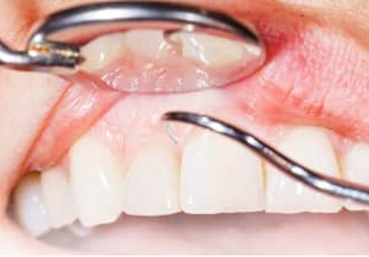

h2が入ります。h2が入ります。h2が入ります。h2が入ります。h2が入ります。
h3が入ります。h3が入ります。h3が入ります。29px

h4が入ります。h4が入ります。h4が入ります。26px
- 神奈川県立湘南高等学校卒業
- 日本大学歯学部卒業
- 日本歯周病学会専門医・指導医
- 日本歯周病学会専門医研修施設長
- 日本歯科審美学会認定医
- 厚生労働省歯科医師臨床研修指導医
- 日本大学歯学部兼任講師（組織・発生学）
- ICOI（International Congress of Oral Implantologists）Active member
- UCLA歯周病・インプラントポストグラデュエイトコース修了
- 日本口腔インプラント学会会員
- 日本顕微鏡歯科学会会員
h4が入ります。h4が入ります。h4が入ります。26px
h5が入ります。h5が入ります。h5が入ります。20px
【2010年11月】
Micro-CT observation of angiogenesis in guided bone regeneration. The 50th Aniniversary, General Session and International Congress of the Korean Academy of Periodontology , Grand Hilton Seoul, Seoul Korea ,11/27-28,2010.
【2012年10月】
Influence of nicotine concentration on bone augmentation. The 20th Annual Scientific Meeting of the European Association of Osseointegration, Copenhagen, Denmark,10/10-13,2012.
さらに見る
h3が入ります。h3が入ります。h3が入ります。29px
h4が入ります。h4が入ります。h4が入ります。26px
テキストが入ります。テキストが入ります。テキストが入ります。テキストが入ります。テキストが入ります。テキストが入ります。テキストが入ります。テキストが入ります。テキストが入ります。テキストが入ります。テキストが入ります。テキストが入ります。テキストが入ります。テキストが入ります。
( fontsize:16px line-height:1.8 letter-spacing 0.05 1行数:47文字 color:#333333)
(計算方法 行間：16px×1.8 文字間：0.05＝50 )
テキストが入ります。テキストが入ります。テキストが入ります。テキストが入ります。テキストが入ります。テキストが入ります。テキストが入ります。テキストが入ります。テキストが入ります。テキストが入ります。テキストが入ります。テキストが入ります。テキストが入ります。テキストが入ります。
( fontsize:16px line-height:1.8 letter-spacing 0.05 1行数:47文字 color:#333333)
(計算方法 行間：16px×1.8 文字間：0.05＝50 )
国に認められた専門家
テキストが入ります。テキストが入ります。テキストが入ります。テキストが入ります。テキストが入ります。テキストが入ります。テキストが入ります。テキストが入ります。テキストが入ります。テキストが入ります。テキストが入ります。テキストが入ります。テキストが入ります。テキストが入ります。
( fontsize:16px line-height:1.8 letter-spacing 0.05 1行数:47文字 color:#333333)
(計算方法 行間：16px×1.8 文字間：0.05＝50 )
玉木歯科医院の医院概要
| thththththththththth | tdtdtdtdtdtdtdtdtdtdtdtdtdtdtdtdtdtdtdtd |
|---|---|
| thththththththththth | tdtdtdtdtdtdtdtdtdtdtdtdtdtdtdtdtdtdtdtd |
| thththththththththth | tdtdtdtdtdtdtdtdtdtdtdtdtdtdtdtdtdtdtdtd |
| thththththththththth | tdtdtdtdtdtdtdtdtdtdtdtdtdtdtdtdtdtdtdtd |
| thththththththththth | tdtdtdtdtdtdtdtdtdtdtdtdtdtdtdtdtdtdtdtd |
| thththththththththth | tdtdtdtdtdtdtdtdtdtdtdtdtdtdtdtdtdtdtdtd |
包括的な観点での診療
歯周病治療・低侵襲レーザー治療

治療しているのに歯周病が
改善されず悩んでいませんか？
歯周組織の健康無くしてお口の中の長期的安定は望めないため、歯周病治療が全ての治療の基礎と考えています。他院では抜歯と診断されたケースについても、日本歯周病学会専門医・指導医が他科の専門医と連携しながら、可能な限り歯を残すよう治療を行っています。
歯周病治療・低侵襲レーザー治療
治療しているのに歯周病が
改善されず悩んでいませんか？
歯周組織の健康無くしてお口の中の長期的安定は望めないため、歯周病治療が全ての治療の基礎と考えています。他院では抜歯と診断されたケースについても、日本歯周病学会専門医・指導医が他科の専門医と連携しながら、可能な限り歯を残すよう治療を行っています。
症例紹介
症例紹介
| 初診時 | |
|---|---|
|
|
| thththththththththth | tdtdtdtdtdtdtdtdtdtdtdtdtdtdtdtdtdtdtdtd |
|---|---|
| thththththththththth | tdtdtdtdtdtdtdtdtdtdtdtdtdtdtdtdtdtdtdtd |
| thththththththththth | tdtdtdtdtdtdtdtdtdtdtdtdtdtdtdtdtdtdtdtd |
| thththththththththth | tdtdtdtdtdtdtdtdtdtdtdtdtdtdtdtdtdtdtdtd |
| thththththththththth | tdtdtdtdtdtdtdtdtdtdtdtdtdtdtdtdtdtdtdtd |
| thththththththththth | tdtdtdtdtdtdtdtdtdtdtdtdtdtdtdtdtdtdtdtd |
| 歯周外科処置時 | |
|---|---|
|
|
| 上顎前歯部にエムドゲインゲルを併用した歯周組織再生誘導療法を行った時の写真です。 | |
| 治療前 |
|---|
|
|
|
| 治療後 |
|---|
|
|
|
歯周組織再生誘導療法に関する学会発表
【2012年9月】
広汎型中等度慢性歯周炎患者に対し切除療法と歯周組織再生療法で対応した一症例.日本歯周病学会学術大
会プログラムおよび講演抄録集第55巻：102,2012.
【2013年9月】
広汎型侵襲性歯周炎患者にエムドゲインを用いた歯周組織再生療法と矯正治療を行った一症例.日本歯周病
学会学術大会プログラムおよび講演抄録集第56巻：135,2013.
✼ セラミック治療のメリット
金属を使わないため自然な仕上がりとなります。また金属アレルギーの心配もありません。
✼ セラミック治療のメリット
金属を使わないため自然な仕上がりとなります。また金属アレルギーの心配もありません。
✼ セラミック治療のメリット
金属を使わないため自然な仕上がりとなります。また金属アレルギーの心配もありません。
治療の流れ
Step1
問診票の記入
口腔がんになる要素がどれくらいあるか等、生活習慣についてお聞きします。
Step2
視診・触診
まずは、お口の中に異常がないか？を目で見て確認します。（視診）
さらに、ゴム手袋を付けた指で触って、しこりや盛り上がっているところがないか？を調べます。（触診）
Step3
検診・写真撮影
お口の中の状態を写真撮影します。
Step4
検体採取
必要であれば口腔内の組織を採取（細胞診、組織診）します。
1～2週間程度で診断結果をお渡しできます。
Step5
カウンセリング
検診後、受診者の方に口腔内の状態をわかりやすくご説明します。
尚、異常があった場合は、大学病院等へ紹介を行います。
問題がなくても、継続して最低でも年に1回は口腔がん検診・口腔健診を受けましょう。
よくある質問
Qホワイトニングとクリーニングの違いは何ですか？
Aホワイトニングは薬剤を使用することにより、歯の内部を白く(漂白)していくことにより、歯の色自体を明るく白くしていきます。クリーニングは歯の表面についた着色(茶渋やタバコのヤニなど)をブラシやシリコンカップなどを使用し取り除いてあげることにより、歯をきれいにしていきます。歯の色が気になる場合は、クリーニングを受けて歯の表面の汚れをキレイにしてから、ホワイトニングされることをおすすめします。
Q痛みはありますか？
Aホワイトニングは薬剤を歯の中に浸透させて脱色させ、白くしていきますので一時的な知覚過敏の症状が出ることがあります。その方のエナメル質の厚みも違いますので、症状が出る方もいれば出ない方もいます。万が一、症状が出てしまっても一時的な反応ですのでご安心ください。
Qホワイトニングとクリーニングの違いは何ですか？
Aホワイトニングは薬剤を使用することにより、歯の内部を白く(漂白)していくことにより、歯の色自体を明るく白くしていきます。クリーニングは歯の表面についた着色(茶渋やタバコのヤニなど)をブラシやシリコンカップなどを使用し取り除いてあげることにより、歯をきれいにしていきます。歯の色が気になる場合は、クリーニングを受けて歯の表面の汚れをキレイにしてから、ホワイトニングされることをおすすめします。
Q痛みはありますか？
Aホワイトニングは薬剤を歯の中に浸透させて脱色させ、白くしていきますので一時的な知覚過敏の症状が出ることがあります。その方のエナメル質の厚みも違いますので、症状が出る方もいれば出ない方もいます。万が一、症状が出てしまっても一時的な反応ですのでご安心ください。
JR東海道本線 藤沢駅からお越しの方
1藤沢駅の改札を出て右に進み、階段を下ります。
1藤沢駅の改札を出て右に進み、階段を下ります。
1藤沢駅の改札を出て右に進み、階段を下ります。
1藤沢駅の改札を出て右に進み、階段を下ります。
1藤沢駅の改札を出て右に進み、階段を下ります。
1藤沢駅の改札を出て右に進み、階段を下ります。